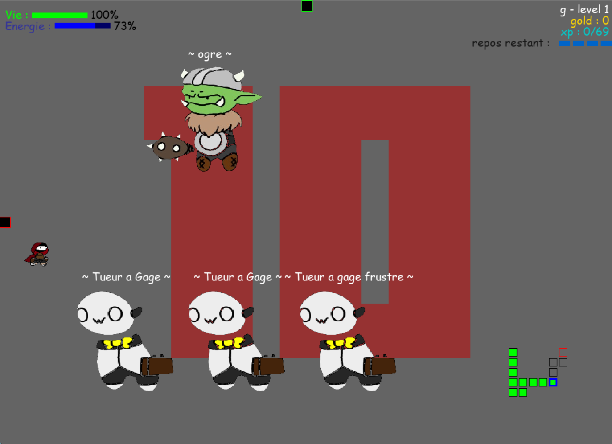
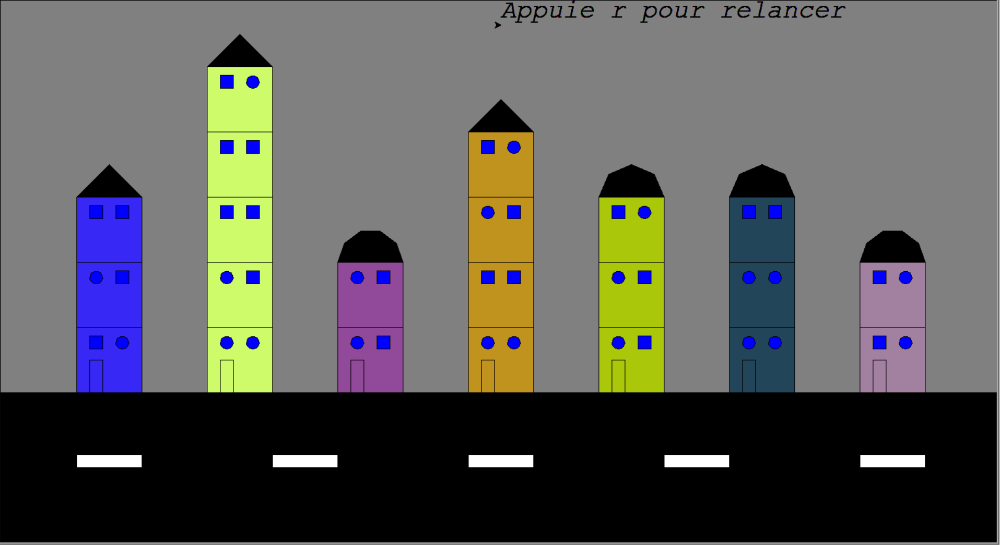
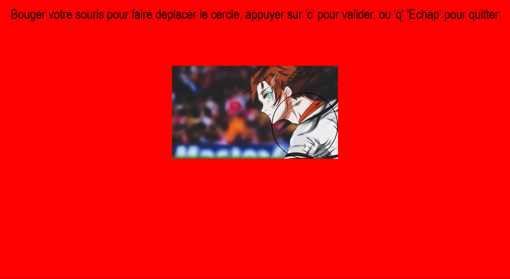
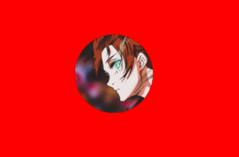
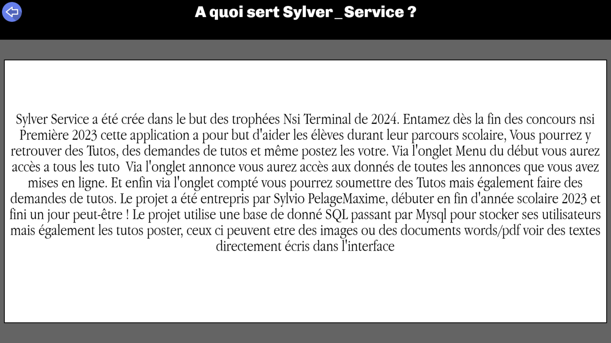
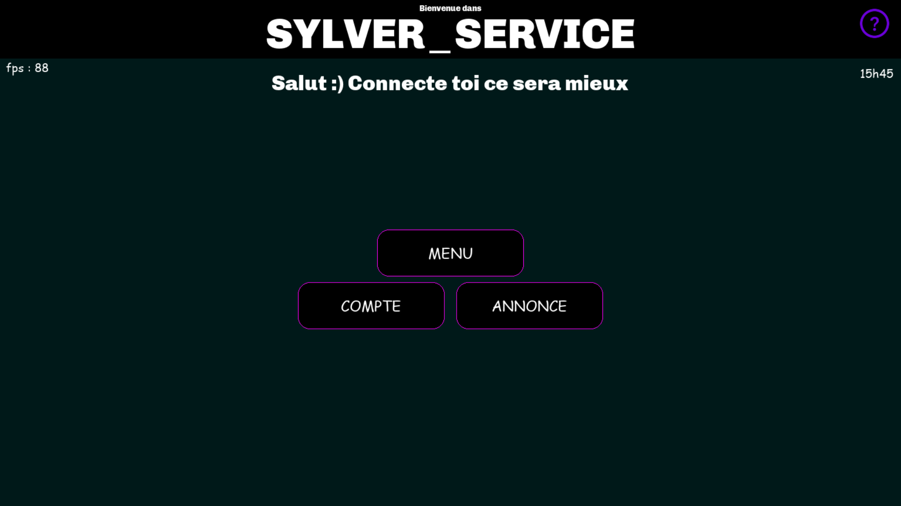
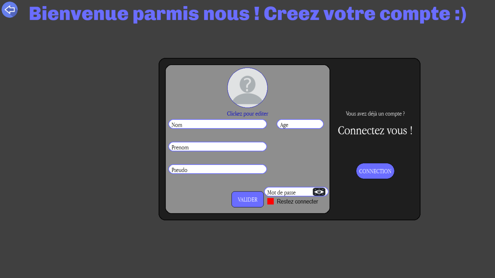
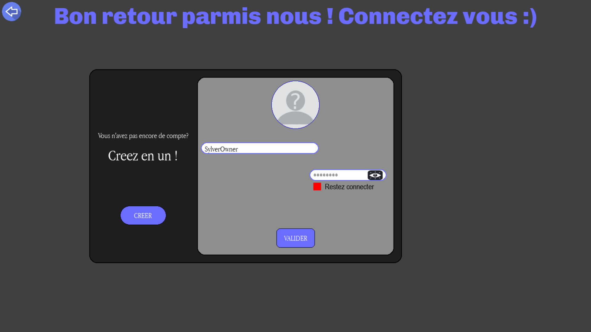
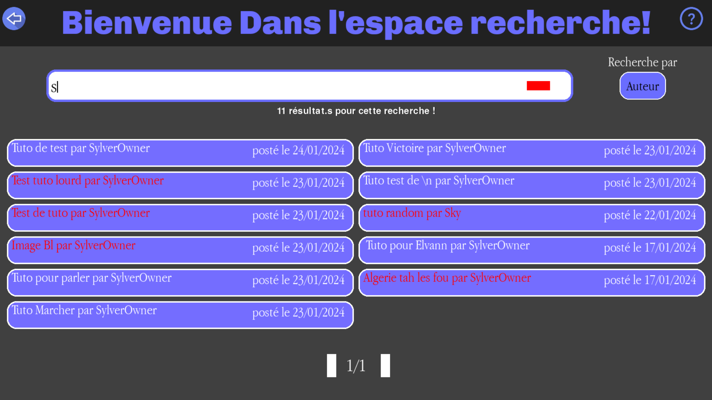

Sylver Donjon
Sylver Donjon est l'un de mes plus gros et plus longs projets en Python.
Il a été entamé en première afin de pouvoir participer au projet NSI de 2023. Mon partenaire et moi avons décidé de faire un jeu Roguelike avec un système de combat assez simple qui est le tour par tour. Notre groupe était composé de 3 personnes, dont 2, dont moi, s'occupaient plus du code, et une autre personne était plus plongée dans le design (même si cette partie a été négligée).
Dans le jeu, nous avons mis en place une mécanique de potion qui représente des boosts que le joueur peut prendre au début de chaque affrontement. Au début de sa partie, il y a la possibilité de choisir entre trois classes : Assassin, Guerrier et Mage. Les statistiques diffèrent ainsi que les attaques entre les classes.
Le but du jeu est de battre les ennemis de chaque room (entre 10 et 15) afin de compléter le donjon.
* Malheureusement, dans ce projet, nous avons eu l'interdiction d'utiliser de la POO car ce n'était pas au programme de première.

Jeux de Bataille
Jeux de bataille est un projet scolaire. On l'a effectué peu après avoir vu les classes Python en cours.
Notre professeur nous avait donné une base (une classe et quelques fonctions) afin d'élaborer le système du jeu de cartes dans la console. Ensuite, l'aspect un peu plus technique est arrivé, l'interface graphique. Je savais déjà utiliser les classes Python, donc j'étais plus à l'aise, donc dans mon groupe de 2 j'avais le rôle d'épaule qui guidait l'avancer. On avait tous les deux sur le système et on a décidé de faire des cartes personnalisées, mon partenaire s'en est occupé.
Le jeu de bataille n'est pas un projet très complexe ni long, mais c'est un bon exercice de réflexion et d'utilisation des classes. Cela faisait également un moment que je n'avais pas utilisé le module Tkinter donc j'ai pu me rafraîchir la mémoire.

Calcul Mental cpp
Dès que j'ai eu envie de rejoindre l'école du Cnam-Enjmin, je me suis dit que je devais essayer d'apprendre le C++. J'ai donc entamé un petit projet C++. C'est un projet console orienté sur le calcul mental. L'utilisateur peut lancer 3 modes :
- Un mode où on a 30s pour répondre à 10 questions
- Un mode où on a 5s par question
- Et enfin un mode infini où un score monte à chaque bonne réponse
Je trouve ce projet assez intéressant et j'espère pouvoir aller plus loin avec du C++ (dédié à Unreal Engine).
Dessine ta rue
Dessine ta rue est mon projet de première avec le module Turtle.
Dû à l'apprentissage des classes Python, notre professeur a décidé de nous le faire faire en incluant simplement le paradigme des classes Python.
Le projet est simple et consiste juste à dessiner une 'rue' contenant des immeubles avec des tailles aléatoires et couleurs aléatoires. Le nombre d'immeubles est également aléatoire.
Pour comprendre les classes en Python et gérer un peu d'aléatoire, c'est un projet très intéressant.

Cropper Python
Ce projet m'a servi de passerelle pour répondre à un problème présent dans mon projet majeur actuel.
Face au problème rencontré dans ce projet, j'ai beaucoup cherché, réfléchi, et finalement entrepris ce petit projet à part. Il a pour but de permettre de sélectionner une photo quelconque afin de la réduire dans un cercle tel une photo de profil. Le but est simple, mais je n'avais aucune idée de comment y arriver. J'aurais juste pu réduire toute l'image dans un simple cercle comme je l'ai d'ailleurs fait au début, mais cela ne me plaisait pas. Je voulais qu'on puisse spécialement choisir la partie du cercle qu'on voulait réduire en rond.
Ce projet est très petit, mais il m'a beaucoup été utile pour le prochain projet.


Sylver Service
Sylver Service est mon projet majeur actuel que j'affectionne le plus.
J'ai décidé de l'entreprendre afin d'avoir une chance de gagner les projets NSI 2024, au moins dans ma région.
Ce serait sûrement une petite vengeance personnelle.
Pour ce projet, j'ai décidé d'essayer de faire une
petite application Python avec Pygame (drôle de choix) où les gens (lycéens visés) peuvent retrouver des tutoriels de toutes
sortes, et même en ajouter s'ils le souhaitent. L'utilisateur peut se connecter à son compte et depuis là poster soit un tutoriel visuel (image, docx, pdf) ou directement écrire
le contenu de son tutoriel sur l'application et le poster.
Ce projet est toujours en cours de développement et j'espère le finir avant février afin d'entamer un mini projet Unreal Engine.
Au cours du développement de ce projet, je me suis entouré de personne souhaitant m'y aider. On y compte : quelqu'un qui fera les design,
quelqu'un qui donne des idées et enfin un second programmeur.




